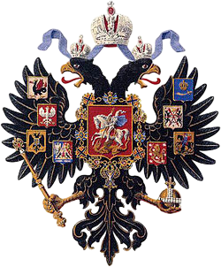
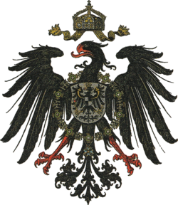
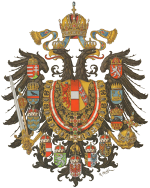

1. Мир к началу XX в.
К 1900‑му году геополитический ландшафт был определён конкуренцией нескольких могучих государств. После объединения Германии и Италии в 1871 году в Европе возникли три крупные империи‑гегемоны: Российская, Германская и Австро‑Венгерская. Остальные государства, в частности Великобритания и Франция, сохраняли влияние, но уже не обладали такой же свободой действий, как безымянные «великие» державы. Эта система международных отношений характеризовалась «новым империализмом»: страны стремились к расширению колониальных владений, захвату рынков и контролю над стратегическими путями.
Россия активно принимала участие в глобальной игре за влияние в Азии. В 1900 году в Китайской долине разразилось восстание боксёрских отрядов, направленное против иностранных миссий и торговцев. На международную сухопутную коалицию, известную как Восьмидесятилетний альянс, встали Россия, Япония, Великобритания, Франция, Германия, Италия, США и Австрия‑Венгрия. Военные силы этих стран, в том числе русские, вмешались в сражения, отразив осадный блокада в Пекине и тем самым продемонстрировав роль России как одного из участников глобального конфликта.
Эти события демонстрируют, как мировая конкуренция за ресурсы, рынки и политическое влияние в начале двадцатого века перекликалась с намерениями России утвердить своё место среди великих держав.
Гербы крупнейших империй‑гегемонов



5. Социальная структура
Российская система оставалась глубоко стратифицированной. Традиционно выделяли четыре основных сословия, которые до начала XX в. сохраняли своё юридическое значение:
Помимо основных сословий в империи существовал отдельный слой инородцев — представители не‑русских и не‑православных народов Сибири, Средней Азии и Кавказа. Эти группы часто пользовались особыми привилегиями (освобождение от подати, особые формы местного самоуправления) или, наоборот, сталкивались с дискриминацией.
По оценкам, в начале XX в. правящий класс (царская семья и ближайшее окружение) составлял менее 1 % населения. Верхний слой (знать, крупные помещики, высшее духовенство) — около 12 %, средний класс (образованные дворяне‑граждане, профессионалы, крупные купцы) — около 1,5 %, рабочий класс — порядка 4 %, а крестьяне охватывали почти 82 % населения.
Эта вертикальная система создавала огромный разрыв между благосостоянием небольшого элитного меньшинства и тяжёлой жизнью большинства населения.